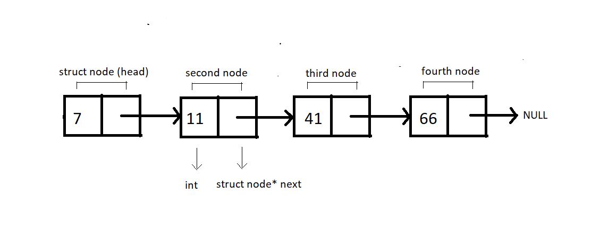

1→ An element in a linked list is a struct Node, it is made to hold interger data and a pointer of data type struct Node*, as it has to point to another struct Node.
2→ We'll create the below illustrated linked list.

3→ We will always create individual nodes and link them to the next node via the arrow operator '→'.
4→ First, we'll define a structure Node and create two of its members, an int variable data, to store the current node's value and a struct node* pointer variable next.
5→ Now, we can move on to out main() and start creating these nodes. We'll name the first node, head. Defin e apointer to head node by struct node* head. And similarly for the other nodes. Request the memory
location for each of these nodes from heap via malloc using the below code.
head = (struct Node *)malloc(sizeof(struct Node));
6→ Link these nodes using the arrow operator and call the traversal function.
7→ Create a void function linkedListTraversal and pass into it the pointer to the head node.
8→ Run a while loop while the pointer doesn't point to a NULL. And keep changing the pointer next each time you are done printing the data of the current node.
#include <stdio.h>
#include <stdlib.h>
struct Node
{
int data;
struct Node *next;
};
void linkedListTraversal(struct Node *ptr)
{
while (ptr != NULL)
{
printf("Element : %d\n", ptr->data);
ptr = ptr->next;
}
}
int main()
{
struct Node *head;
struct Node *second;
struct Node *third;
struct Node *fourth;
// Allocate memory fornodes in linked list in heap (dynamic memory allocate)
head = (struct Node *)malloc(sizeof(struct Node));
second = (struct Node *)malloc(sizeof(struct Node));
third = (struct Node *)malloc(sizeof(struct Node));
fourth = (struct Node *)malloc(sizeof(struct Node));
// link first and second nodes
head->data = 7;
head->next = second;
// link second and third nodes
second->data = 11;
second->next = third;
// link third and fourth nodes
third->data = 211;
third->next = fourth;
// terminate the list a the third node
fourth->data = 66;
fourth->next = NULL;
linkedListTraversal(head);
return 0;
}